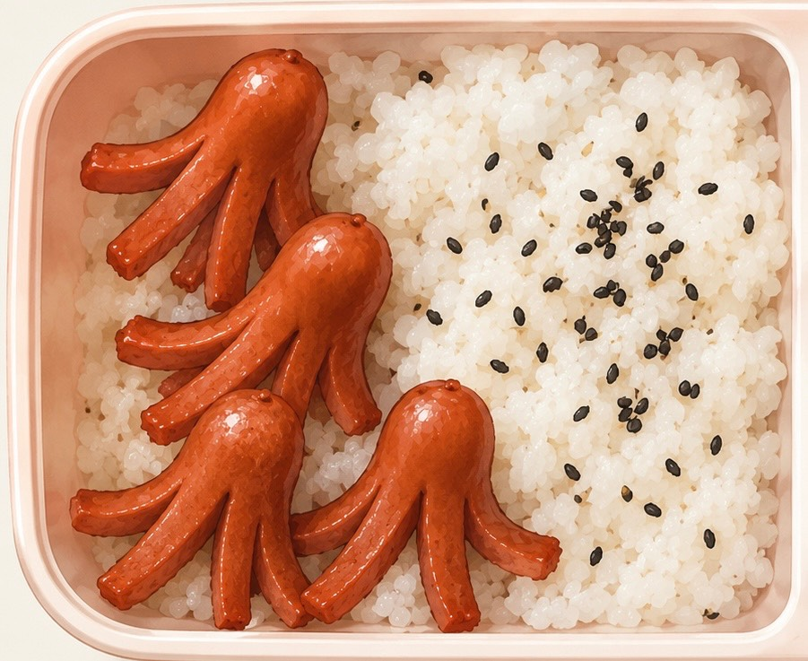
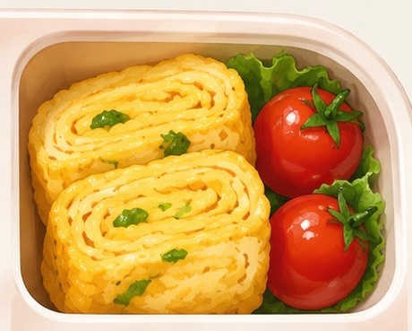
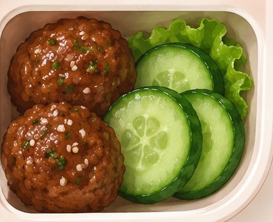

Welcome to my Bento Site! This is a simple guide to packing traditional lunch boxes, making quick side dishes, and arranging fresh ingredients so they look good. Since it’s October, we also have a special pumpkin sushi recipe for the Halloween season, along with ghost nigiri, mummy rolls, and crunchy spider maki.